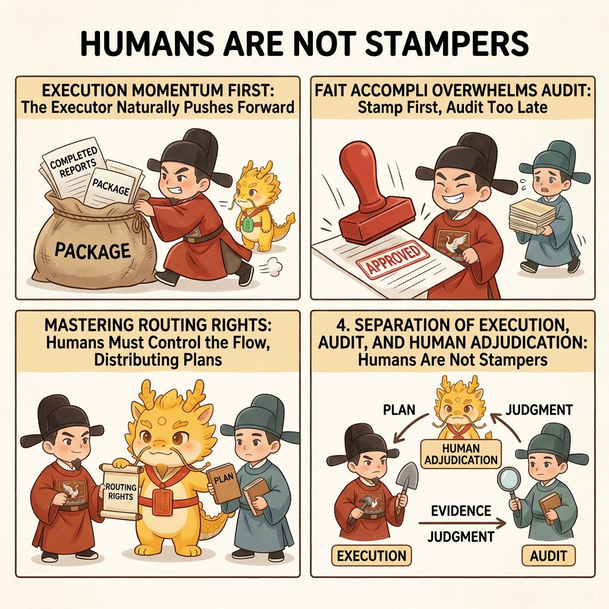

Reference
Cyber-Ming Protocol

Cyber-Ming-Protocol Wiki
Documentation for a human-AI governance protocol for deep-water AI coding.
Chinese | English
First time here? Start with the English section of the README, then follow the three learning layers in 00: first run the Minimal Loop Guide, then move into the Minimal Stable Loop Guide, and only after that enter Layer 3 when you want to understand how this relates to mainstream approaches.
If you have already entered the stage where parent and child contracts keep multiplying and you want current progress to live in repo artifacts instead of chat alone, read the Campaign Runtime Guide alongside the wiki.
The Three Learning Layers in 00
| Learning Layer | What This Layer Solves | Go Here |
|---|---|---|
| Layer 1: Minimal Loop | How to run one loop by hand, where to paste the prompts, when Web review happens, and why completion depends on evidence | Minimal Loop Guide |
| Layer 2: Minimal Stable Loop | How to stabilize the protocol so that IDE-side Skill and the Web-side fixed prompt are both established | Minimal Stable Loop Guide |
| Layer 3: Relation and Adoption | How this connects to mainstream methods, what this repo actually delivers, and how to adopt it into an existing setup | Three Things / Comparison |
The route is simple: complete Layer 1 first, then Layer 2. Only when you start asking how this fits with mainstream approaches or your current stack should you move into Layer 3.
One-line Navigation
00-Entry
- Layer 1: Minimal Loop
- Minimal Loop Guide: a hands-on first run that keeps prompt copying, the 30-second mental model, bootstrap essentials, and correction prompts in one practical flow
- Layer 2: Minimal Stable Loop
- Minimal Stable Loop Guide: a hands-on stability path that tries to keep the Skill setup and Web-side fixed-prompt setup in one practical flow
- Layer 3: Relation and Adoption
- Three Things: what this repo actually ships, and how Protocol / Skill / Web audit assets differ - Comparison: how this relates to workflow, spec-driven, and agent team, and how to adopt it into an existing stack
01-Why
- CS vs Management: Why the developer's role is no longer just coding
- Dual Distortion: Why technical distortion and governance distortion appear together
- Methodology Coordinates: Where this protocol stands in the public landscape
02-How
- Minimal Loop: Come back here after your first run for the expanded method
- Atomic Execution Contract and Chronicles: Why the contract form is lighter than heavy specs and harder than ordinary plans
- White-box Reconciliation: Saying "done" is not enough; completion needs evidence
- Scout Mechanism: Probe first when uncertain instead of pretending to understand
03-Deep Water
- Dual-track Audit: The IDE executor and Web auditor must stay separate, with humans routing between them
- From Coder to Governor: What capabilities this protocol asks of the developer
- Cognitive Debt: What to do when understanding falls behind system change
- Seven Stars Renewal: How to break and reconnect when windows decay
- Parent Contracts: Why a child contract may pause a parent contract but must not silently replace it
- Free Development Mode: How to continue long-running work under uncertainty without giving up governance
- Worktree Enfeoffment: How teams collaborate without polluting mainline
- Pulse Enfeoffment: High governance does not have to mean low throughput
- Boundaries: Which battles this protocol has not won yet
04-Evidence
- Battle Report 1: A full reversal from pseudo-completion to real acceptance
- Chronicles Sample: Three system leaps in one day under high governance
- Execution Fuel: Why people stay willing to execute a high-friction protocol over time
Glossary
- English glossary not available yet.